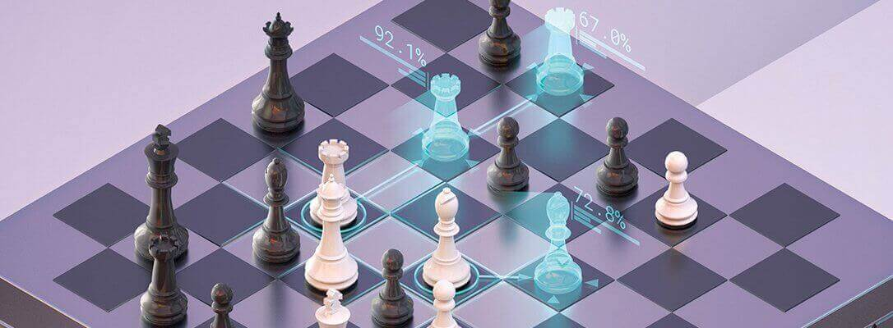
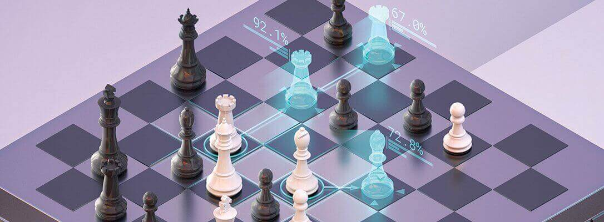
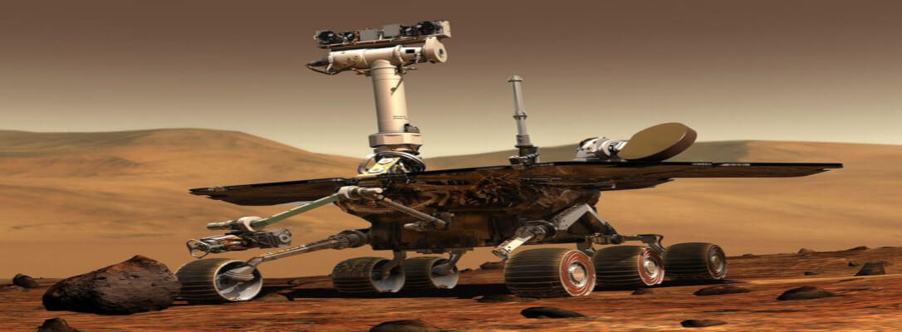
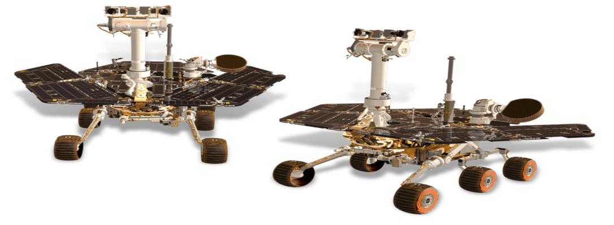

AlphaZero
 

AlphaZero is a computer program created by the company DeepMind who specialise in artificial intelligence research. The program was developed to master the games of shogi, go and chess better than any program before it. AlphaZero was able to convincingly defeat the world-champion program for all three games. In contrast with other programs designed to play these games such as Stockfish, AlphaZero uses machine learning in order to optimise its strategy based on experience, without any human influenced moves. This resulted in AlphaZero having an aggressive and unconventional, but effective technique. Even with an objectively weaker engine than Stockfish 8, AlphaZero was still able to never lose in a 100 game contest.
Mars Exploration Rover
 In January 2004, two Mars rovers landed on the surface of Mars apart from each other. Launched by Nasa in 2003, the two robots were named MER-A Spirit and MER-B Opportunity. Their purpose was to explore Martian geology for evidence of past water activity on Mars. According to NASA, they found evidence that Mars was wetter long ago. They also found evidence that Mars could have sustained microbial life, if any existed. MER-A Spirit and MER-B Opportunity were active until March 22, 2010, and June 10, 2018, respectively.